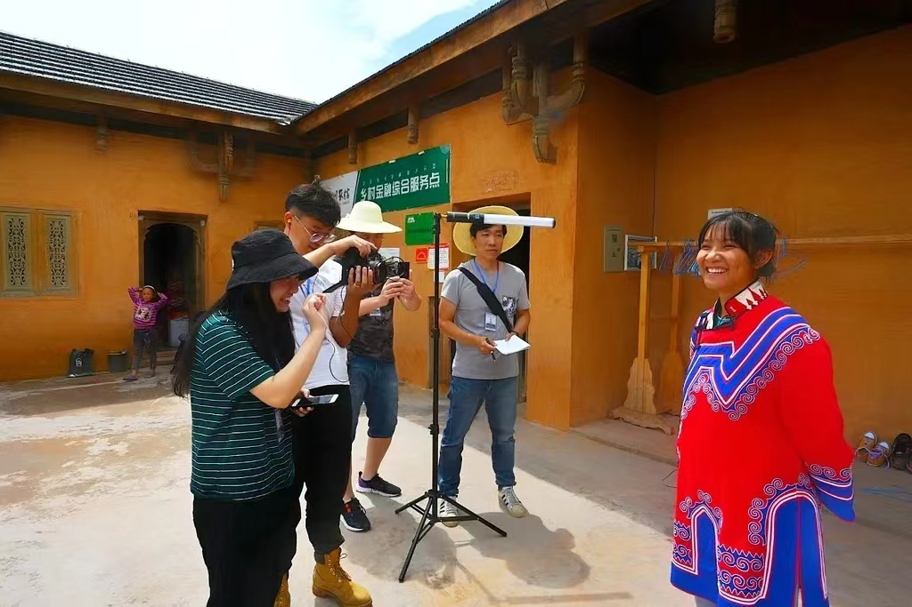

听听TA们的心声

对话【昭觉县文旅局】：让彝族文化符号走上国际大舞台
July 25, 2023“我们现在在和四川各高校，乃至全国高校做一个集彝族服饰的纹饰、纹路、图案、绣法等的数据库，这些具有彝族特色的一些符号汇集在一起相当于做了一个彝族文化基因库。”

对话【薇穆嘎扎非遗工坊】：从手作工艺到赋能当地妇女
August 09, 2023“只有与时俱进，贴近广大消费群体的喜好，同时保留彝族特色，才能将彝族文化产品做大做强，让更多人爱上彝族文化，这也是我们工坊的初衷。”

对话【手艺传承人-阿的五各】：非遗传承人的身份是荣誉也是责任
September 14, 2023“这个身份在生活和工作上帮了我很多，像最近的火把节就有许多游客和采购商向我购买许多彝族服饰，有时也会和政府部门合作制作一些用以展示彝族形象的特色产品。”